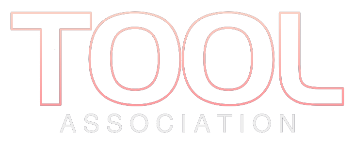

动漫
Omo动漫
Omo动漫(备用)
age动漫
AnFuns
影视
茶杯狐
豌豆pro
电影狗
漫画
搜漫
Cola漫画
Mox.moe
包子漫画
奇漫屋
Mangabz
图片壁纸
Vilipix
Pixivel
pixiviz
pixivic
anime-pictures
HD
wallhaven
Wallpaper Abyss
音乐
MyFreeMP3
LRCsong
DTshot
漫音社
VIP付费音乐下载
音乐搜索器
以图搜源
SauceNAO
Yandex搜图
Multi-service
PixGrid
搜图bot酱
Ascii2d
Gelbooru
yande.re
Trace
Dialogue
33台词
游戏相关
植物大战僵尸
minecraft启动器
mc手机国际版
mc手机国际版(备)
东方project
EMPRESS仓库
Byrut
常用工具
镜像站
浏览器插件
FilePursuit
MSDN
在线发视频
软件下载
果核剥壳
鹏少资源网
Alternativeto
Adobe软件下载
晨钟网络科技
Rutracker
Lrepacks
系统与美化
MSDN
UUP dump
win美化工具箱
DP社区
致美化
素材资源
老生常谈
Seeseed
Pexels
阿里巴巴矢量图标库
LookAE
Artlist
淘声网
Rebang.Today
网盘搜索
秒搜
易搜
皮卡搜索
爱盘搜
云搜
口袋云盘
亚潘
小二搜索
奈斯搜索
tg中文搜索
磁力/资源
海盗湾
FilePursuit
电报老司机
BT联盟
奇迹秀
搜书引擎
鸠摩搜书
龙岩图书馆
安娜的档案
SoBooks
文渊阁
LoreFree
PDFDRIVE
浙江图书馆
书格
求索之路
报纸在线阅读系统
学习平台
大学资源网
小初高学习资料
科塔学术
图欧学习资源库
终身教育平台
全网优质课程库
编程学习网站
road to coding
我要自学网
考试酷
问答库
大学相关(可能失效)
大学生活质量指北
三千所高等院校
超星学习通
学习强国
智慧职教mooc
智慧树
国家高教智慧平台
学银在线
学堂在线
中国大学mooc
金榜题名